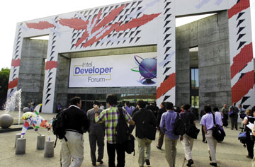
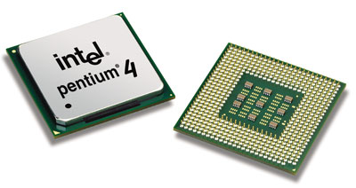
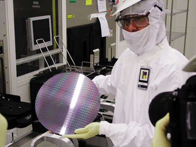
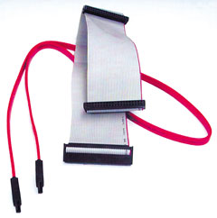
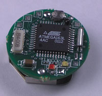
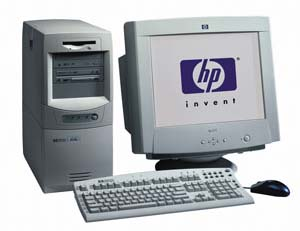

Андрей Борзенко
Новости с Intel Developer Forum
Дважды в год на Форум корпорации Intel (http://www.intel.com) для разработчиков (Intel Developer Forum, IDF) собираются тысячи специалистов из многих стран мира. IDF - это крупномасштабная международная конференция, на которой можно получить техническую информацию и общее представление о технологиях, необходимых для создания современных продуктов. IDF Fall 2001 проходил под девизом: Architecting the Digital Universe. А проектировать цифровую Вселенную, разумеется, невозможно без самых современных технологий.
В рамках осеннего Форума проводилось множество мероприятий и лабораторных занятий, а также демонстрации новых технологий и продуктов. Среди участников конференции были разработчики ПО и оборудования для телекоммуникаций, серверов, персональных компьютеров и карманных клиентских устройств. Из 180 технических сессий почти 40% были посвящены серверным технологиям. Несмотря на то, что ИТ-индустрия переживает сейчас в мире далеко не лучшие времена, интерес к этому корпоративному событию был по-прежнему огромен. На конференции присутствовало свыше 300 журналистов и аналитиков из 40 стран.
|  |
| IDF Fall 2001 начался.
|
Заглядывая в будущее
Ни для кого не секрет, что Intel вкладывает значительные средства в научные исследования и разработки; в частности, в текущем году на эти цели корпорация потратила около 4 млрд долл. Результаты говорят сами за себя. Например, еще летом было объявлено, что ученые Intel создали самые быстрые кремниевые транзисторы в мире, продемонстрировав, что нет непреодолимых препятствий для того, чтобы закон Мура продолжал действовать до конца этого десятилетия. Новые транзисторы с элементами размером всего 20 нм позволят создать микропроцессоры, содержащие порядка миллиарда транзисторов и работающие на частоте до 20 ГГц при напряжении питания менее 1 В. Данные транзисторы оказались на 30% меньше и на 25% быстрее ранее созданных. Они лягут в основу нового поколения технологических процессов с проектными нормами 45 нм (0,045 мкм), которые Intel ориентировочно планирует внедрить в производство в 2007 г.
Не случайно поэтому выступление вице-президента и директора Intel по исследованиям Дэвида Тенненхауса (David Tennenhouse) привлекло множество слушателей. Г-н Тенненхаус, в частности, рассказал о модели так называемых всепроникающих (проактивных) вычислений (proactive computing), которая позволит создавать распределенные сети для сбора и обработки информации из окружающего мира с целью контроля и оперативного реагирования на те или иные события. В ближайшее время у каждого жителя развитых стран будет множество маленьких компьютеров - сотовый телефон, персональный цифровой секретарь (PDA), носимый ПК (wearable PC).Все эти предельно миниатюрные приборы будут объединены в локальные радиосети, через которые они легко смогут общаться с другими устройствами (например, у больных - с центральным компьютером больницы и т.п.). Intel стремится упростить подобные компьютеры и другие цифровые устройства, а также научить их взаимодействовать друг с другом без вмешательства человека. "По существу, речь идет о повсеместном внедрении Интернета и о его глубокой интеграции во встраиваемые платформы, - сказал Дэвид Тенненхаус. - Это будет означать стократный рост Сети".
Основные исследования в области спонтанных (ad hoc) беспроводных сетей проводятся с помощью ученых Калифорнийского университета в Беркли (UCB). Подобные сети, которые собираются и разбираются без помощи системного администратора, могут оказаться полезными в самых разнообразных областях. Сеть, которую продемонстрировал профессор Дэвид Каллер (David Culler), состояла примерно из тысячи узлов, представляющих собой печатную плату размером не более пятирублевой монеты. Эти узлы, обнаруженные участниками Форума под своими креслами, самостоятельно образовали беспроводные соединения друг с другом и установленным на сцене концентратором. Пока сеть, спроектированная в UCB, не несла никакой полезной нагрузки, но, как предполагается, ее аналоги можно будет использовать для решения задач, непосильных для прочих современных технологий. Например, тысячи узлов, снабженных простыми датчиками температуры, можно разбросать в зоне лесного пожара. Образовав сеть, они будут передавать на центральный пост карту распространения огня. Таким же способом можно составить карту морского дна или организовать поиск людей в глухих местах.
Микропроцессоры
Первый день Форума многие журналисты назвали "днем триумфа Intel". Именно тогда корпорация официально объявила о выпуске микропроцессора Pentium 4 с тактовой частотой 2 ГГц. Intel понадобилось почти тридцать лет, чтобы достичь рубежа в 1 ГГц, - и всего лишь за восемнадцать месяцев эту планку удалось поднять в два раза. Более сорока разработчиков ПО и производителей ПК продемонстрировали целый ряд новых, оптимизированных для процессора Pentium 4 приложений и продуктов как для домашних, так и для корпоративных пользователей. С помощью систем на основе Pentium 4 с тактовой частотой 2 ГГц можно создавать мультимедийные материалы и обмениваться ими гораздо быстрее, чем на компьютерах с процессором Pentium III 1 ГГц. По мнению разработчиков, двухгигагерцовый Pentium 4 позволяет повысить производительность труда корпоративных пользователей более чем на 50% по сравнению с Pentium III 1 ГГц, особенно в условиях многозадачности, когда исполняемые в фоновом режиме приложения (например, выявление вирусов, шифрование и сжатие файлов) создают значительную нагрузку на процессор.
|  |
| Микропроцессор Pentium 4 c тактовой частотой 2 ГГц.
|
Большинство экспертов согласны в том, что рекордный чип вызовет волну новых моделей ПК, поскольку о его поддержке заявили практически все ведущие фирмы-производители компьютеров. Поскольку одновременно с анонсом нового кристалла Intel снизила цены на существующие модели Pentium 4, есть вероятность, что к концу года ПК на базе этого микропроцессора можно будет приобрести всего за 900 долл.
Выступая перед четырехтысячной аудиторией инженеров, разработчиков и конструкторов, исполнительный вице-президент Intel Пол Отеллини (Paul Otellini) отметил, что корпорация планирует расширить рамки своих разработок, не ограничиваясь быстродействующими микропроцессорами, чтобы создать фундаментальные технологии, которые повысят продуктивность работы пользователей и сделают ее интереснее. Во время своего выступления г-н Отеллини продемонстрировал микропроцессор Pentium 4, работающий на частоте более 3,5 ГГц (кристалл Northwood с соблюдением проектных норм 0,13 мкм). Докладчик особо подчеркнул, что, по оценкам специалистов, микроархитектуру Pentium 4 на протяжении его жизненного цикла можно будет масштабировать до 10 ГГц. Кстати, первые микропроцессоры Northwood, выполненные с соблюдением проектных норм 0,13 мкм, появятся уже в этом году и по тактовой частоте достигнут барьера 3,5 ГГц до конца 2002 г.
По словам Пола Отеллини, Intel будет продолжать инвестиции в разработку новых продуктов, развитие производства и технологических процессов, которые позволят корпорации занять лидирующие позиции в гонке микропроцессорных частот. Хотя высокое быстродействие процессоров само по себе немаловажно, его недостаточно для достижения новых уровней развития и появления новаторских решений, способных обеспечить развитие индустрии. Теперь Intel будет создавать технологии, специально ориентированные на определенные сегменты рынка и модели использования. Компания уверена, что такой индивидуальный подход к разработке продуктов и технологий позволит лучше удовлетворить потребности пользователей во все более усложняющемся мире цифровой информации.
|  |
| Часть стратегического плана Intel - переход на 12-дюймовые подложки
|
Многопотоковость
В качестве примера нового подхода, который Intel намерена привнести на рынок серверов, Пол Отеллини продемонстрировал технологию под названием Hyper-Threading (ранее известную как Jackson Technology). Она позволит микропроцессору обрабатывать больше информации за единицу времени благодаря более эффективному распределению вычислительных ресурсов. В многопоточном режиме операционная система воспринимает один физический процессор как два логических.
Hyper-Threading фактически позволяет организовать мультипроцессирование в одном чипе (благодаря переключению с одного потока инструкций на другой) и обеспечить 30%-ный прирост производительности на некоторых приложениях для серверов и рабочих станций. За счет использования дополнительных регистров процессор, например, сможет направлять команды одного приложения в блок целочисленной арифметики, одновременно выполняя команды другого приложения в арифметическом устройстве для вещественных чисел.
Основная особенность новой архитектуры - использование совокупности регистровых файлов. Здесь решается проблема разрыва между скоростью обработки и временем доступа к основной памяти (за счет переключения в каждом такте микропроцессора на работу с очередным регистровым файлом). Каждый регистровый файл обслуживает один вычислительный процесс - тред (поток). Теоретически в микропроцессоре может быть n регистровых файлов, поэтому запрос, выданный в основную память каждым из потоков, может обслуживаться в течение n-1 такта, вплоть до момента, когда микропроцессор снова переключится на тот же регистровый файл. Выбор значения n определяется отношением времени доступа к памяти ко времени выполнения команды микропроцессором.
Современные микропроцессоры относятся к однотредовым, использующим параллелизм уровня команд, который выявляется либо статически (компилятором), либо динамически (аппаратурой микропроцессора), либо комбинацией этих двух методов. Параллелизм уровня тредов при использовании этих микропроцессоров может быть выявлен только статически. Динамическое его выявление в рамках архитектур однотредовых процессоров затруднено, так как требует просмотра большого количества команд на предмет их одновременного исполнения - расширения окна исполнения. Для решения проблемы зависимостей при использовании регистров и ячеек памяти между тредами в микропроцессор вводится специальная аппаратура. Кстати, еще в 1999 г. корпорация Intel приобрела компанию Level One Communications, в "копилке" которой был мультитредовый сетевой кристалл IXP1200, включающий шесть четырехтредовых микропроцессоров.
Intel планирует впервые представить на рынке технологию Hyper-Threading в семействе процессоров Xeon в следующем году, а затем постепенно расширить сферу ее применения на всю линейку продуктов по мере оптимизации ПО, с тем чтобы оно могло использовать преимущества этой технологии. Многие разработчики ОС и прикладных программ уже объявили о поддержке Hyper-Threading и сейчас оптимизируют свои продукты. Для приложений, не поддерживающих многопоточный режим, Intel разрабатывает инструментарий, с помощью которого разработчики смогут придать им такую возможность. В будущие компиляторы Intel и анализаторы кода VTune Performance Analyzers также войдет исчерпывающий набор средств для полной поддержки этой технологии в приложениях. Разработчики программ, в которых многопоточный режим уже реализован, могут воспользоваться преимуществами дополнительной оптимизации (их обеспечивают библиотеки Intel Performance Libraries с поддержкой Hyper-Threading), а также стать участниками специальных программ, представленных на Intel Developer Services - специальном онлайновом ресурсе, где разработчики могут получить технические, маркетинговые и другие материалы.
Мобильность
Рост потребности в крупных серверных платформах заставил компании с интересом отнестись к устройствам с высокой плотностью размещения, включая серверы, оптимизированные для установки в стойки, а в последнее время и сверхтонкие ("листовые", blade) серверы, дюжину которых можно упаковать в один корпус. При такой высокой плотности размещения требуется минимизировать тепловыделение и потребляемую мощность.
Именно эти задачи были поставлены перед инженерами при создании нового микропроцессора Banias. Разработка проекта Banias ведется в израильском центре разработок Intel (Israel Design Center). Три главные цели проекта - уменьшение размеров транзисторов (для снижения потребляемой энергии), разработка эффективной технологии повышения тактовой частоты (без существенного увеличения потребляемой энергии), создание эффективной технологии работы с командами процессора.
Микропроцессоры Banias станут первыми кристаллами Intel, специально сконструированными для мобильных вычислений. Известно, что до настоящего времени процессоры для мобильных устройств представляли собой результат доработки обычных процессоров для настольных ПК. Banias знаменует собой отход от этой стратегии. Процессор появится не раньше конца следующего года, однако уже сегодня известно о некоторых усовершенствованиях, заложенных в его конструкцию. Главные преимущества Banias - это более активное управление энергопотреблением и архитектурное решение micro ops fusion, направленное на экономию энергии. В последних мобильных процессорах Intel тактовая частота уменьшается, когда в высокой скорости нет особой необходимости (так называемая технология SpeedStep). Banias продолжит эту тенденцию на более высоком уровне. Более того, и сами инструкции мобильного чипа будут ориентированы на экономию энергии. Технология "сплавления микроопераций" - это способ скомбинировать инструкции таким образом, чтобы минимизировать общее число выполняемых команд. Ведь очевидно, что, чем меньше выполняется инструкций, тем ниже уровень потребляемой энергии.
В основу ядра нового процессора Banias положена модифицированная архитектура Pentium III, но без гиперконвейерной организации, присущей процессорам Pentium 4. Первые кристаллы будут иметь тактовую частоту, на которой, по-видимому, остановятся к тому времени мобильные микропроцессоры.
Новые процессоры нацелены на сегмент рынка, который в последние пять лет растет быстрее, чем рынок ПК в целом, и, по мнению Intel, будет продолжать быстро расти. Появление данной технологии для рыночного сегмента мобильных устройств ожидается в начале 2003 г. Со временем архитектура Banias найдет применение в серверах с высокой плотностью размещения и компактных настольных системах.
Портативная система, продемонстрированная на Форуме, работала на новом процессоре Pentium 4 с частотой 2 ГГц, выполненном с соблюдением проектных норм 0,18 мкм. Впрочем, данный микропроцессор не будет использоваться в реальных ноутбуках. Первоначально Intel планирует представить мобильные процессоры Pentium 4 1,5 ГГц, выполненные с соблюдением проектных норм 0,13 мкм. Образцы такого процессора, по заявлению представителей корпорации, уже поставляются производителям ноутбуков, а их массовый выпуск намечен на первую половину 2002 г. Что касается мобильных процессоров Pentium 4 с частотой 2 ГГц, то их выпуск планируется ближе к концу того же года. Помимо всех современных технологий, используемых в аналогичных процессорах для мобильных ПК, в новых микросхемах будут реализованы специфические функциональные возможности, ориентированные на мобильные системы, в том числе технология Enhanced SpeedStep, состояние пониженного энергопотребления Deeper Sleep, корпус малого размера, позволяющий создавать более тонкие и легкие мобильные ПК. Причем появление моделей Pentium 4 для ноутбуков не означает уход со сцены ранее анонсированных мобильных Pentium III, выполненных с проектными нормами 0,13 мкм. Эти кристаллы просто будут позиционироваться как микропроцессоры для систем среднего класса.
McKinley и другие
Образцы систем на базе процессора семейства Itanium следующего поколения - McKinley -- должны появиться уже в этом году. Новый процессор будет состоять из 220 миллионов транзисторов и работать на 128-разрядной системной шине с частотой 400 МГц и производительностью 6,4 Гбайт/с (напомним, что текущая версия Itanium работает на 64-разрядной шине с частотой 266 МГц). Количество блоков целочисленных вычислений по сравнению с текущими моделями также будет увеличено: шесть вместо четырех. Само собой, McKinley будет работать на более высоких тактовых частотах (до 1 ГГц) и оборудоваться более эффективной кэш-памятью третьего уровня размером до 4 Мбайт, выполненной на самом кристалле. McKinley будет поддерживать системы с числом процессоров более тысячи.
В 2003 г. выйдет версия кристалла Madison, выполненная с соблюдением проектных норм 0,13 мкм. Она рассчитана на 8- и 16-процессорные серверы и будет оснащена 6 Мбайт кэш-памяти третьего уровня. Объем кэш-памяти процессоров, рассчитанных на менее мощные серверы, будет составлять от 3 до 6 Мбайт. В том же 2003 г. появятся кристаллы Deerfield, предназначенные в основном для двухпроцессорных серверов среднего уровня. Они будут базироваться на архитектуре McKinley и Madison, но обладать меньшим энергопотреблением и тепловыделением.
Система, выполненная на основе McKinley, исполняла при демонстрации на Форуме типичные корпоративные приложения; на ней также функционировала база данных, при этом в процессе обработки информации намеренно создавались аварийные ситуации. Созданная Intel архитектура MCA (Machine Check Architecture) позволяла системе продолжать выполнение транзакций в то время, как шло восстановление после сбоев различного характера. Отличительная особенность MCA заключается в ее способности выявлять и исправлять ошибки, причем об этом оповещается операционная система и другие ключевые компоненты. MCA обеспечивает возможность анализировать данные и реагировать таким образом, чтобы повысить общую надежность и доступность системы. MCA - это открытая архитектура, и разработчики могут адаптировать ее в соответствии с конкретными потребностями.
Шины и интерфейсы
Intel постоянно работает над технологиями, которые позволили бы создавать более совершенные платформы, а также повысили бы производительность шин и интерфейсов. К их числу можно отнести 3GIO, Serial ATA, USB 2.0, AGP 8x и другие спецификации.
Выпуск окончательной версии спецификации Serial ATA 1.0 приблизил появление нового поколения интерфейсов для внутренних устройств хранения данных. Новая технология - результат эволюционного развития параллельного интерфейса ATA; она создана рабочей группой Serial ATA Working Group, насчитывающей сегодня 74 компании, в числе которых APT Technologies, Dell Computer, Intel, IBM, Maxtor и Seagate. Интерфейс Serial ATA предназначен для подключения таких внутренних устройств хранения данных, как жесткие диски, накопители DVD и CD-RW, к системным платам настольных и портативных ПК, недорогих серверов и сетевых хранилищ информации. Наращиваемая производительность (начиная с 1,5 Гбит/с) и полная совместимость с существующими операционными системами и ПО, как ожидается, смогут удовлетворять потребности пользователей на протяжении всего следующего десятилетия. Первым серийным устройством с новым интерфейсом станет, очевидно, винчестер семейства Seagate Barracuda. В первой половине следующего года на рынке появятся и другие решения Serial ATA/1500. Ну а полный переход индустрии на производство дисков Serial ATA ожидается в четвертом квартале 2003 г.
|  | Кабели для параллельного и последовательного интерфейса АТА.
|
В рамках Форума корпорация Marvell (http://www.marvell.com) объявила о выпуске микросхемы-моста 88i8030 для Serial ATA, кристалла, позволяющего производителям контроллеров и системных плат начать выпуск продуктов с этим интерфейсом. Данная микросхема обеспечивает обратную совместимость с параллельным ATA-интерфейсом (ATA/66, ATA/100).
Помимо всего прочего, осенний IDF стал местом широкой демонстрации возможностей интерфейса Hi-Speed USB 2.0. Технология USB была выделена в отдельную экспозицию - USB Implementers Forum (USB-IF). Продукты, прошедшие тестирование на совместимость и использующие высокую пропускную способность интерфейса Hi-Speed USB 2.0, были снабжены сине-бело-красным логотипом с надписями Certified и Hi-Speed. Периферийные устройства, работающие на скорости 12 Мбит/с (например, клавиатуры, мыши, джойстики и акустические системы), украшал аналогичный логотип, но без надписи Hi-Speed. В своем выступлении вице-президент Intel Луи Бернс (Louis Burns) впервые продемонстрировал цифровую видеокамеру с интерфейсом Hi-Speed USB 2.0, подключенную к компьютеру на основе микропроцессора Pentium 4 и опытного образца набора микросхем с интегрированным контроллером USB 2.0. (южный мост ICH3).
Многие компании -- участники Форума демонстрировали свои решения. В частности, Cypress Semiconductor (http://www.cypress.com) представила самый высокопроизводительный на сегодняшний день концентратор USB 2.0, а NetChip Technology (http://www.netchip.com) и Adaptec (http://www.adaptec.com) объявили о совместной разработке полностью интегрированного решения, включающего линейку хост-контроллеров Hi-Speed USB 2.0 производства Adaptec и концентраторы на основе высокоскоростных контроллеров NetChip. Кроме того, на стенде компании Gateway (http://www.gateway.com) были выставлены ПК на базе Pentium 4, снабженные портами USB 2.0 (производства NEC).
В совместном заявлении, представленном на Форуме Arapahoe Work Group, учрежденной Compaq, Dell, IBM, Intel, Microsoft и профильной некоммерческой ассоциацией PCI-SIG (http://www.pcisig.com), сообщалось о присоединении к Arapahoe Work Group в качестве ведущих разработчиков еще 22 компаний компьютерной индустрии (среди которых и AMD). Как известно, результатом работы группы должна стать спецификация устройств ввода-вывода третьего поколения, обеспечивающая высокоскоростной обмен данными между подсистемами компьютера и периферийными компонентами.
Будущая архитектура ввода-вывода третьего поколения (3rd Generation Input Output, 3GIO) представляет собой универсальную архитектуру ввода-вывода последовательного типа с малым количеством контактов, производительность которой будет ограничиваться исключительно технологическими особенностями медных межсоединений. Предполагается, что эта архитектура будет с равным успехом применяться в настольных и мобильных системах, серверах, коммуникационных устройствах и встроенных приложениях, сохраняя программную совместимость с существующей технологией PCI. Именно поэтому учредители Arapahoe Work Group избрали в качестве партнера по созданию и поддержке открытой архитектуры 3GIO промышленную ассоциацию PCI-SIG.
Роль 3GIO не сводится только к замене AGP для графического контроллера. Она будет использоваться как магистральная шина для соединения южного и северного мостов набора микросхем, а также как универсальный вариант для работы с периферийным оборудованием и в качестве интерфейса локальной шины ввода-вывода.
Предполагается, что Arapahoe Work Group представит проект спецификации версии 1.0 группе PCI-SIG в первом квартале 2002 г., а окончательный вариант будет утвержден примерно в середине того же года. Первые устройства, основанные на архитектуре ввода-вывода третьего поколения, ожидаются на рынке во второй половине 2003 г.
Поддержка InfiniBand
Выступая перед аудиторией инженеров и разработчиков на IDF, вице-президент Intel Enterprise Platforms Group и генеральный директор подразделения Enterprise Processors Division Гади Сингер (Gadi Singer) рассказал о концепции параллелизма как одном из основных путей снижения затрат и достижения высокой производительности. Этот подход предусматривает одновременное использование множества компьютерных ресурсов на всех уровнях - от организации в целом до единичного микропроцессора.
Для получения выигрыша от параллелизма организация должна соблюдать три главных принципа. Первый - распределить ресурсы систем, что позволит решать больше задач за меньшее время. Такая стратегия развертывания, отличающаяся от традиционной концентрации систем в едином крупном центре обработки данных, позволит снизить первоначальные затраты на освоение и распределить стоимость ресурсов. Второй принцип параллелизма заключается во внедрении технологий, позволяющих наиболее эффективно организовать параллельную обработку данных и сократить до минимума время простоя ресурсов корпоративных систем. Микропроцессоры Itanium, способные одновременно выполнять несколько задач, - хороший пример новой технологии, которая позволяет повысить как скорость, так и эффективность. Еще один пример - технология Hyper-Threading, благодаря которой один микропроцессор сможет обрабатывать данные так же, как два. Третий принцип параллелизма - объединение разнообразных систем с помощью мощной, основанной на использовании промышленных стандартов технологии, например InfiniBand, которая открывает совершенно новые возможности для соединения серверов в центрах данных и организации кластеров.
Широкую поддержку архитектуры InfiniBand со стороны индустрии и интерес к разработке продуктов на ее основе подтвердили несколько демонстраций, состоявшихся на Форуме. В частности, было продемонстрировано реальное трехуровневое приложение, которое работает на существующем оборудовании семейства IBM X-series с использованием компонентов Intel - IBM DB2 и SAP. При соединении с коммутаторами от InfiniSwitch, QLogic и OmegaBand было показано, как архитектура InfiniBand и платформа Intel обеспечивают реальное масштабирование кластерных решений для центра данных. Кроме того, были продемонстрированы сокращение времени ожидания и минимизация простоев центрального процессора как прямой результат применения архитектуры InfiniBand, а также работа различных устройств, объединенных в распределенной среде, для трансляции видео по запросу, Web-хостинга и кластера базы данных, который способен выдержать реальную для предприятия нагрузку. В частности, Intel объявила о совместном тестировании продуктов с компанией Dell (http://www.dell.com). Они будут проверять, как программные и аппаратные компоненты Intel InfiniBand функционируют в различных конфигурациях серверных платформ Dell PowerEdge при различном характере нагрузки. Таким образом, Dell станет ключевым партнером Intel в работах по отладке, тестированию и оптимизации продуктов InfiniBand для промышленных серверов.
Корпорация Intel также объявила о расширении инструментария разработчика для тестирования решений на основе InfiniBand, предназначенного для производителей оборудования, и об организации лаборатории InfiniBand Software Optimization Lab для поставщиков ПО. Последняя дополнит существующую лабораторию Intel по обеспечению совместимости - Intel Interoperability Lab. Каждая из этих инициатив позволит разработчикам создавать и отлаживать свои продукты, в которых реализована архитектура InfiniBand.
Беспроводное будущее
Основные вопросы, которые должна решить индустрия беспроводных телекоммуникаций на настоящем этапе, еще весной этого года обозначил в своем выступлении на конференции Ассоциации сотовой связи и Интернета (Cellular Telecommunications & Internet Association, CTIA) президент и главный исполнительный директор Intel Крейг Барретт (Craig Barrett). В частности, будущее развитие беспроводной связи будет определяться масштабируемыми приложениями и сервисами, которые могут совместно использоваться в разнообразных устройствах. Поскольку в новых карманных беспроводных устройствах применяются Интернет-технологии, а количество и разнообразие таких устройств увеличиваются, необходимо, чтобы они могли эффективно взаимодействовать друг с другом. Устройства и системы должны передавать речь, данные, сообщения, мультимедийную информацию и свободно обмениваться ими друг с другом. Intel создала четыре архитектуры для Интернета как на уровне микросхем, так и общесистемных, включая архитектуру, которая специально разработана для удовлетворения потребностей индустрии беспроводной связи в основанной на стандартах платформе.
|  | Прототип узла беспроводной сети.
|
"В последние годы индустрия беспроводной связи переживает небывалый подъем, - сказал тогда г-н Барретт. - Intel является ключевой фигурой этого процесса. Тем не менее в условиях снижения темпов экономического развития важно использовать возможности, которые помогут перейти к следующему циклу процветания беспроводных коммуникаций. Мы можем медленно выбираться из сложившейся неблагоприятной ситуации, сохраняя существующее положение вещей, а можем избрать другой путь - путь инвестирования в будущее".
Как бы в подтверждение его слов на осеннем Форуме Intel представила программу, назначение которой - помочь разработчикам в создании и продвижении на рынок приложений, услуг и устройств беспроводной связи. Сеть Intel PCA Developer Network предлагает компаниям, специализирующимся на беспроводных технологиях, техническую и маркетинговую поддержку. Она включает, в частности, доступ к более чем 300 инструментам для проектирования сотовых телефонов и персональных цифровых помощников, а также других мобильных Интернет-устройств и приложений, в которых реализована архитектура Intel PCA. Участниками программы стали уже более 200 компаний.
Напомним, что архитектура Personal Internet Client Architecture (PCA) позволяет различным компьютерным и коммуникационным устройствам свободно взаимодействовать друг с другом. Она включает сменные аппаратные и программные компоненты и позволяет поставщикам беспроводного оборудования и программных решений предлагать различные дополнительные услуги независимо от стандартов, поколений и географии. Разделяя коммуникационные и вычислительные компоненты устройства, PCA обеспечивает платформу для быстрого создания новых приложений, для которого не требуется внедрять совершенно новые устройства связи.
Лучшие среди лучших
На Форуме Intel объявила победителей в номинации Fall 2001 Intel Innovative PC Awards. Эта награда присуждается мобильным, корпоративным и домашним компьютерам, которые наилучшим образом сочетают производительность, простоту и индивидуальность.
|  | Компьютер HP Vectra VL800 - победитель в номинации Fall 2001 Intel Innovative PC Awards.
|
Впервые в рамках присуждения Fall 2001 Intel Innovative PC проводилось независимое тестирование в лабораториях Ziff-Davis PC Laboratories. Среди отмеченных премиями Innovative PC были компьютеры HP Omnibook 6100, HP Vectra VL800, IBM ThinkPad A Series, IBM NetVista X Series, IBM TransNote, Samsung Matrix II+GT-9000, а также SOTEC PC Station E4150AV. Напомним, что первыми премиями за новаторство были отмечены ПК, настройка, использование, модернизация и обслуживание которых стали значительно проще. Позднее рамки номинации были расширены, и в конкурсе стали участвовать также портативные ПК и компьютеры для бизнеса, а критерии пополнились таким параметром, как применение наиболее совершенных из доступных компьютерных технологий.